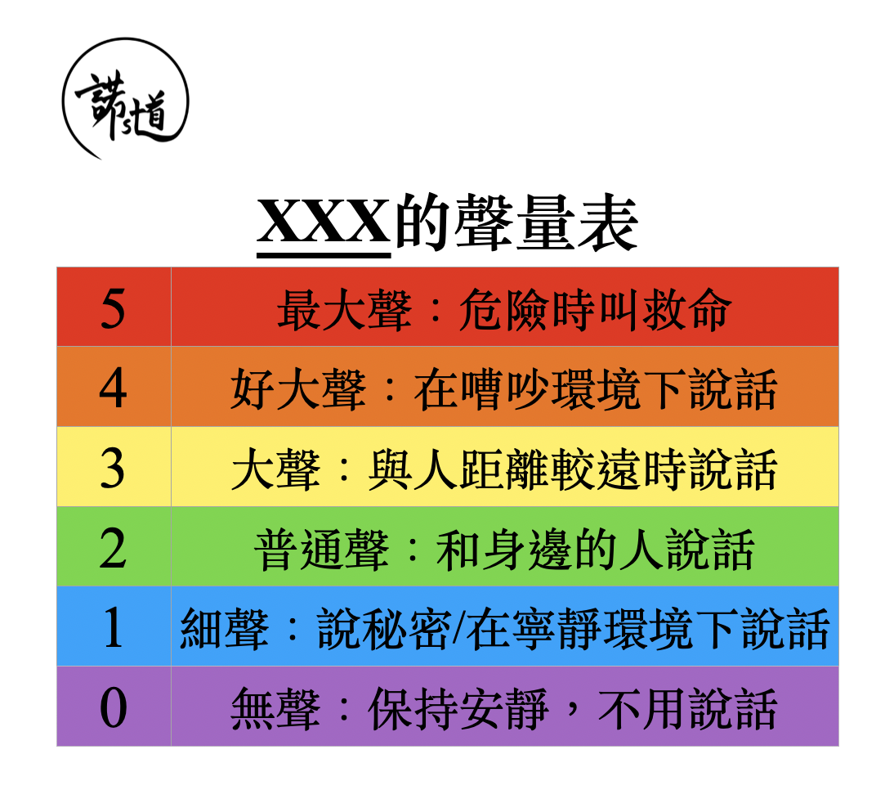

自閉症譜系障礙與聲量控制
撰文：諾道團隊
已更新：01-10-2024
很多自閉症譜系障礙(下稱ASD)的孩子都會在聲量控制方面遇到困難，導致說話時不是太大聲，就是太細聲，原因主要有三：
一. 感覺處理
ASD孩子處理和調節聲量的方式讓他們難以感知音量。另外，有些ASD孩子亦會透過聲音這個途徑來控制及調節自己的行為。
二. 社交溝通
ASD孩子在辨識非語⾔提示方面能力較弱，例如他們未能察覺周邊的人因為他說話太大聲而皺眉或用雙手遮著耳朵。他們亦較難理解社交上的潛規則，例如在圖書館需保持安靜、乘搭巴士或地鐵時可以說話但要控制聲量。
三. 執行功能
ASD孩子的執行功能一般較弱，例如做事欠缺計劃及組織、難以控制衝動等，這些都會導致他們難以調節自己的聲量以配合身處的情景。
跟大家分享一個簡單又有效的方法幫助孩子調節聲量。
運用聲量表

跟從聲量表中不同的聲量級別說話。首先跟孩子一起做，指著「0」不要說話，指著「1」輕聲說出「1」……直到一齊大聲叫喊「5」；之後引導孩子自行嘗試，看看當你指著「2」的時候，孩子能否用適當的聲量說出「2」。
孩子理解這個聲量表後，就能在日常生活中善用聲量表提醒孩子運用恰當聲量說話。例如當孩子說話太大聲時，你可以指向聲量表跟他說：「我喺你隔離，用2號聲就可以喇！」
透過客觀的標準配上視覺提示提醒孩子，比起說：「細聲啲，唔使咁大聲講嘢！」往往來得更有效。後者容易讓孩子感到無所適從：我唔覺得大聲/我已經細聲咗/仲要幾細聲？當有既客觀又具體的標準時，孩子就能更清晰理解及跟從要求。
總結
善良聲量表，逐步幫助孩子掌握適當聲量說話！
提提你，當孩子情緒爆發的時候，就不是一個學習聲量控制的好時機喇！
把這篇⽂章分享給身邊跟你同樣關心孩子成長的朋友，讓我們一起和孩子健康快樂地成長。
如有任何問題或需要幫忙，歡迎你跟諾道團隊聯絡，我們樂意為你提供協助！